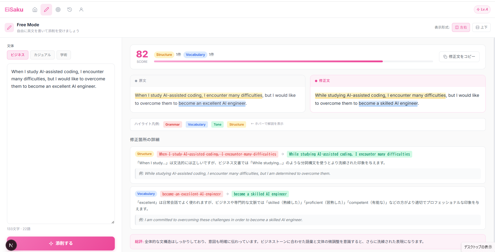

When I study AI-assisted coding, I encounter many difficulties...
あなた専用の英作文コーチ。
文法・語彙・文体・構成まで、多角的にフィードバック。

TOEIC 600〜800点でも、英語を「書く」となると途端に自信がなくなる。そんな壁を感じていませんか。
文法ミスはもちろん、語彙の自然さ・文体のトーン・論理構成まで。AIが4つの観点で徹底的にフィードバック。「なぜ修正するのか」の理由付きで、読むだけで学習になります。
Lv.1の基本5文型から始まり、時制・関係代名詞・仮定法・ビジネス定型表現まで、段階的に習得。Challenge Mode では現在のレベルに最適化されたお題が出題されます。
レベルアップのたびに達成感。継続するほど、着実に力がつく設計です。
過去の添削をいつでも振り返れる履歴機能。スコアの変化・観点別ミスの頻度を可視化し、「自分がどこで躓いているか」が一目でわかります。同じミスを繰り返さないための仕組み。
むずかしい設定は不要。英文を書いて送るだけ。あとはAIが全部やってくれます。